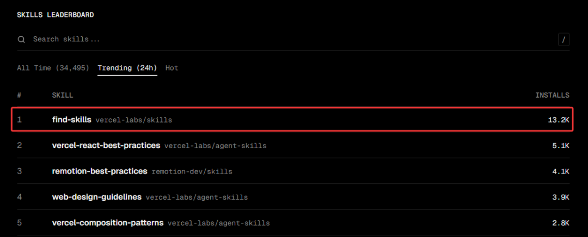
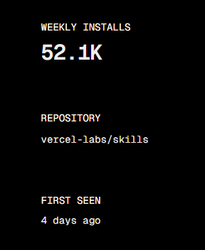
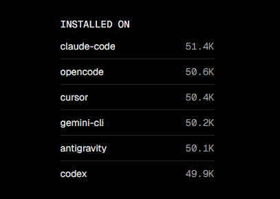
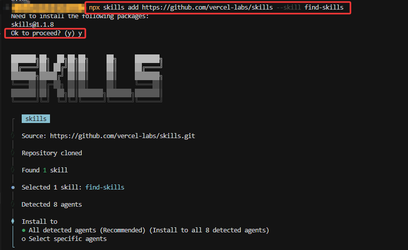
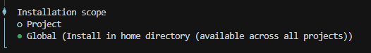
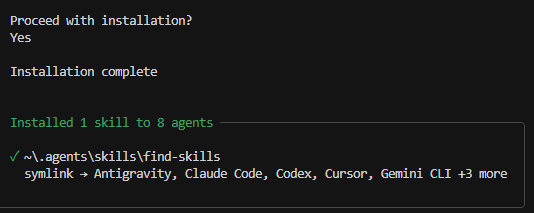
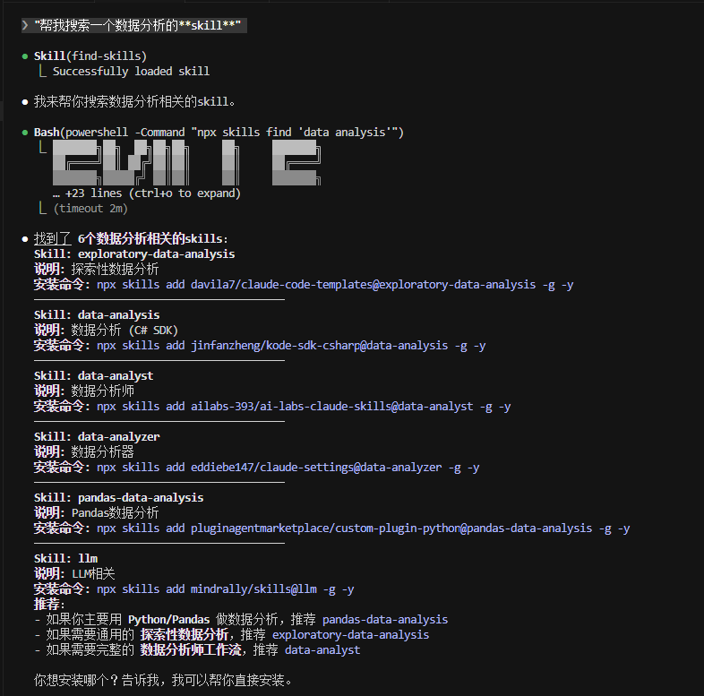

加我进AI讨论学习群，公众号右下角“联系方式”
文末有老金的 开源知识库地址·全免费
老金昨天装了个技能，装完之后整个人都傻了。
为什么？
因为这个技能不是帮你做具体事情的。
它是一份"说明书"，教AI Agent怎么帮你搜索和安装其他技能。
更绝的是：
24小时，装了13.2K次。
排行榜第二名才5.1K次，差距2.6倍。

上线4天，横扫52.1K安装量！

安装在各大平台的次数非常勇猛！

它叫find-skills。
他不是创作的元Skill，但他能让你找到你需要的Skill，所以老金也称之为元Skill。
find-skills是什么
一句话：给AI Agent的"搜索指南"。
你装了find-skills之后，会发生什么？
1、你的AI Agent（比如Claude Code）会读取这份指南
2、当你说"帮我搜索一个数据分析的skill"时，AI Agent会理解你的意思
3、AI Agent运行搜索命令：npx skills find data analysis
4、搜索结果展示给你，你确认后AI Agent帮你安装
你可以用中文交互，AI Agent会自动处理。
原版的两个大坑
官方版本来自Vercel：
npx skills add vercel-labs/skills@find-skills -g -y但是有两个大坑。
坑1：触发不稳定，看AI心情
因为AI是语义理解的，同样的话有时候触发，有时候不触发。
⚠️ "帮我找个做数据分析的工具" → 可能触发，也可能直接推荐Pandas
✅ "帮我搜索一个数据分析的skill" → 更容易触发find-skills搜索建议：想稳定触发，最好在话里带上"skill"这个词。
坑2：Windows上完全不能用
这是最致命的。
Claude Code在Windows上使用的Bash环境运行 npx skills find会没有任何输出。
老金实测，搜索命令执行后返回空白，什么结果都没有。
这意味着原版find-skills在Windows的Claude Code中基本不可用。
Windows用户的解决方案
老金fork了一份，修复了Windows兼容性问题。
GitHub地址：https://github.com/KimYx0207/findskill
原理很简单：让Claude Code用PowerShell来运行skills命令，而不是用默认的Bash环境。
安装方法
步骤1：先装原版
npx skills add vercel-labs/skills@find-skills -g -y
这里老金建议全局，当然，你需要的skill非常多的话，那就用项目。

然后就直接安装就行了。

步骤2：下载Windows版替换
打开这个地址：
https://github.com/KimYx0207/findskill/blob/main/windows/SKILL.md
复制全部内容，替换到这个路径：
C:\Users\你的用户名\.agents\skills\find-skills\SKILL.md步骤3：重启Claude Code
关掉Claude Code，重新打开。
步骤4：验证安装
对Claude Code说："帮我搜索一个数据分析的skill"
如果看到搜索结果，说明安装成功。

如果对你有帮助，记得关注一波~
使用方法
触发方式
根据find-skills的SKILL.md，以下说法更容易触发搜索：
1、"find a skill for X"
2、"is there a skill that can..."
3、"搜索skill"
4、"找个skill"
但因为AI是语义理解的，不带"skill"也可能触发。
老金建议：想稳定触发，话里带上"skill"这个词更保险。
在AI Agent中使用
你说："帮我搜索一个数据分析的skill"
AI Agent会：
1、理解你要做数据分析
2、翻译成英文关键词"data analysis"
3、运行 npx skills find data analysis（Windows版会用PowerShell）
4、展示搜索结果给你
5、问你要不要安装
6、你确认后，运行安装命令
全程自然语言交互，不需要手动输入命令。
搜索关键词速查表
老金整理了一份中英文对照表，建议收藏。
数据分析 → data analysis → 推荐exploratory-data-analysis
做PPT → ppt, presentation → 推荐pptx
写文章 → writing → 推荐writing-skills
代码审查 → code review → 推荐code-reviewer
部署上线 → deploy → 推荐vercel-deployment
写测试 → testing → 推荐webapp-testing
做视频 → video, remotion → 推荐remotion-best-practices
React开发 → react → 推荐vercel-react-best-practices
Python开发 → python → 推荐python-testing-patterns
前端设计 → frontend, design → 推荐frontend-design
搜索技巧：
1、用具体关键词："react testing"比"testing"效果好
2、试试同义词：如果"deploy"没找到，试试"deployment"
常见问题
Q1：我说"帮我找个工具"，AI没有调用find-skills？
因为AI是语义理解的，"找工具"这种说法有时候会触发，有时候不会。
想稳定触发，建议话里带上"skill"这个词：
"帮我搜索一个数据分析的skill" → 更容易触发find-skills搜索
Q2：Windows上Claude Code搜索没有输出？
用老金的Windows版本：https://github.com/KimYx0207/findskill
或者手动在PowerShell里运行：
npx skills find "data analysis"Q3：怎么验证安装成功？
npx skills list -g会列出所有已安装的全局skills。
Q4：skill和MCP有什么区别？
Skill是知识和指南，教AI怎么做事（比如React最佳实践）。
MCP是工具和能力，让AI能做新的事（比如读取文件、调用API）。
简单说，Skill是"知道怎么做"，MCP是"能够做"。
Q5：怎么卸载或更新skill？
# 卸载
npx skills remove [skill名称] -g
# 更新
npx skills update老金总结
find-skills是个好东西，但原版有两个大坑：
1、触发不稳定，建议话里带上"skill"
2、Windows上完全不能用
Windows用户直接用老金的版本：https://github.com/KimYx0207/findskill
装上之后，你的AI Agent就能帮你搜索skills.sh生态里的几百个技能了。
有问题随时交流，老金我会持续更新这个Windows兼容版。
参考来源
- find-skills官方：https://skills.sh/vercel-labs/skills/find-skills
- Windows兼容版（老金fork）：https://github.com/KimYx0207/findskill
- Skills CLI文档：https://skills.sh/docs
- Vercel Skills GitHub：https://github.com/vercel-labs/skills
- Skills v1.1.1更新日志：https://vercel.com/changelog/skills-v1-1-1-interactive-discovery-open-source-release-and-agent-support
每次我都想提醒一下，这不是凡尔赛，是希望有想法的人勇敢冲。
我不会代码，我英语也不好，但是我做出来了很多东西，在文末的开源知识库可见。
我真心希望能影响更多的人来尝试新的技巧，迎接新的时代。
谢谢你读我的文章。
如果觉得不错，随手点个赞、在看、转发三连吧🙂
如果想第一时间收到推送，也可以给我个星标⭐～谢谢你看我的文章。
开源知识库地址：
https://tffyvtlai4.feishu.cn/wiki/OhQ8wqntFihcI1kWVDlcNdpznFf